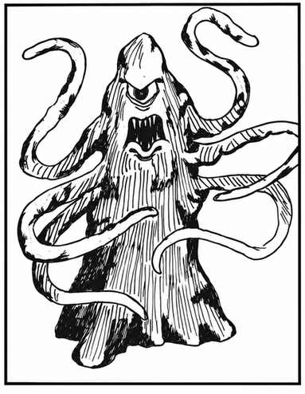

绳怪 · Roper
 |
|
绳怪居住在地下洞穴，以各种生物为食，但最喜欢人类。它们能直立伪装成柱子或钟乳石，也能完全伏在地面上，看起来只是一处隆起。绳怪有一个类似砂囊的器官，内含 3–18 枚铂金币，并有 35% 的概率含有 5–20 颗宝石。
绳怪有六根强韧、黏稠、像绳索一样的分泌物，可在 2–5 寸距离内射出。命中会造成虚弱（1–3 个战斗轮内力量降至 50%），随后绳怪把猎物拖向布满利齿的大嘴，迅速吞食。丝索被挣断的概率与开门相同，但绳怪每轮会将受害者拉近 10 尺。绳怪不受闪电影响，寒冷伤害至多减半，但极易受火焰伤害（豁免检定 −4）。
绳怪呈黄灰色，外形像一团恶臭、腐烂的污物；它长约 9 尺，直径约 3 尺，整体呈雪茄状。